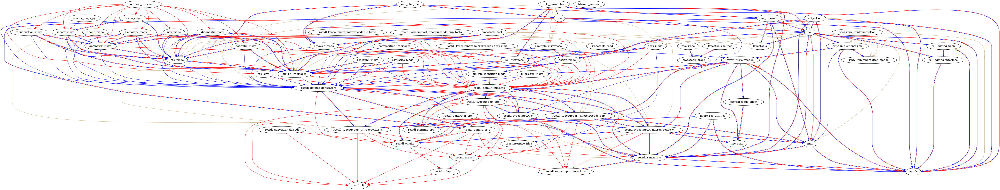

MicroROS on RT-Thread
OSPP 2022 - MicroROS on RT-Thread
Student: Haijun Du
Mentor: Han Wu
Robot Operating System (ROS) is a set of a software frameworks for robotic application development that was initially released by Stanford University in 2007. Further improvements on ROS could introduce breaking changes, making ROS1 unstable. As a result, the second generation of ROS was released (ROS2). The target platform of ROS2 is Linux, while micro_ros devote to bringing ROS2 API to MCU.
This project aims to use micro_ros on RT-Thread, which is a Real-time Operating System (RTOS). Some issues remain unsolved on the existing micro_ros software package(https://github.com/wuhanstudio/micro_ros): the UDP communication is unstable, more service examples are to be added, a precompiled static library is required for compilation of the micro_ros package, and not integrated into the micro_ros official build system to provide benchmark results.
Week 0
2022/06/27 - 2022/07/03
前提
虚拟机上安装Ubuntu20.4，ROS2安装foxy
工作内容
- microROS在linux上使用；
- microROS在rtthread上使用；
microROS在linux上使用
目的
-
初步尝试microROS；
-
查看microROS的源码的组成部分；
结果
按照First micro-ROS Application on Linux构建microROS和micro-ROS agent。由于运行ros2 run micro_ros_setup build_firmware.sh和ros2 run micro_ros_setup build_agent.sh报错：
Compiling for host environment: not cleaning path
Building firmware for host platform generic
usage: colcon [-h] [--log-base LOG_BASE] [--log-level LOG_LEVEL]
{build,test,test-result} ...
colcon: error: unrecognized arguments: --packages-up-to rosidl_typesupport_microxrcedds_c --metas src
所以直接使用colcon build
服务端：
ros2 run micro_ros_agent micro_ros_agent udp4 -p 8888
客户端：
ros2 run micro_ros_demos_rclc ping_pong
客户端报错：
[ERROR] [1656251587.172644707] [rclc]: [rclc_publisher_init_best_effort] Error in rcl_publisher_init: Undefined type support, at /home/haijun/Desktop/test/src/uros/rmw_microxrcedds/rmw_microxrcedds_c/src/rmw_publisher.c:127, at /tmp/binarydeb/ros-foxy-rcl-1.1.13/src/rcl/publisher.c:180
从error来看，应该是rclc_publisher_init_best_effort函数出错。
具体原因未知
microROS在rtthread上使用
目的
- 尝试rtt能否接入ROS2
结果
rtt客户端：
连接方式：udp
运行时，从rtt终端终端提示来说，线程能正常运行。
ros agent 服务端：
ros2 run micro_ros_agent micro_ros_agent udp4 -p 8888
[1656252343.224844] info | UDPv4AgentLinux.cpp | init | running... | port: 8888
[1656252343.225293] info | Root.cpp | set_verbose_level | logger setup | verbose_level: 4
[1656252350.362219] info | Root.cpp | create_client | create | client_key: 0x7097FB67, session_id: 0x81
[1656252350.362475] info | SessionManager.hpp | establish_session | session established | client_key: 0x7097FB67, address: 192.168.31.73:704
[1656252350.400982] info | ProxyClient.cpp | create_participant | participant created | client_key: 0x7097FB67, participant_id: 0x000(1)
重新查看rtt端的代码，发现rclc_publisher_init_default()的返回值不为零，可以定位创建publish失败。原因未知。
总结
在linux端的rtt端运行microROS均失败，定位到的错误均由于publisher_init初始化失败导致。目前不知道原因为何，猜测是不是micro-ROS agent构建有问题。
下一步计划
- rtt端测试下uart通信，看是否出现同一样问题；
- 使用docker 尝试下。
Week 1
2022/07/04 - 2022/07/10
上周问题
- 单片机和ROS2 无法连接
上周会议给出的原因和建议：
- 原因
- 使用虚拟机，导致数据多次转发，可能存在数据延迟问题；
- docker版本过旧；
- 建议：
- 使用WSL或者双系统；
- 安装新版本的docker；
- 使用串口作为测试；
本周工作
- 在window上基于RT-Thread Studio和art-pi构建micro ros (串口)工程；
- 在Ubuntu上构建
micro-ros-agent( docker & Vulcanexus)
docker
版本：20.10.17
# 运行micro-ros-agent：本地
docker run -it --net=host microros/micro-ros-agent:galactic udp4 -p 8888
# 运行micro-ros-demos
sudo docker run -it --net=host microros/micro-ros-demos bash
source install/local_setup.bash
ros2 run micro_ros_demos_rclc int32_publisher
# 查看话题
ros2 topic list
ros2 topic echo /std_msgs_msg_Int32
可以看到话题，说明micro-ros-agent没有问题
# 运行micro-ros-agent
docker run -it -v /dev:/dev --privileged microros/micro-ros-agent:galactic serial --dev /dev/ttyUSB0
# docker run -it -p 9999:9999/udp --privileged microros/micro-ros-agent:galactic udp4 -p 9999
# 单片机
microros_pub_int32
结果：
# ubuntu
[1657365773.777815] info | TermiosAgentLinux.cpp | init | running... | fd: 3
[1657365773.778163] info | Root.cpp | set_verbose_level | logger setup | verbose_level: 4
[1657365857.374839] info | Root.cpp | create_client | create | client_key: 0x10176887, session_id: 0x81
[1657365857.375037] info | SessionManager.hpp | establish_session | session established | client_key: 0x10176887, address: 0
[1657365858.394287] info | ProxyClient.cpp | create_participant | participant created | client_key: 0x10176887, participant_id: 0x000(1)
# 单片机
[micro_ros] node created
[micro_ros] publisher created
[micro_ros] timer created
[micro_ros] executor created
[micro_ros] New thread mr_pubint32
micro_ros 软件包配置

Vulcanexus
# agent 测试
ros2 run micro_ros_agent micro_ros_agent udp4 -p 8888
# demos 测试
sudo docker run -it --net=host microros/micro-ros-demos bash
source install/local_setup.bash
ros2 run micro_ros_demos_rclc int32_publisher
可以看到话题，说明基于Vulcanexus安装的micro-ros-agent没有问题
# 运行micro-ros-agent
ros2 run micro_ros_agent micro_ros_agent serial -D /dev/ttyUSB0
# 单片机
microros_pub_int32
结果和 docker一致。
结果 & 问题
结果：单片机和ROS2 无法连接的问题没有解决。从结果上来看，还是create_topic没有成功。
目前micro ros agent运行在双系统的Ubuntu上，应该不存在数据多次转化。目前猜想是不是单片机端配置有问题。
Week 2
2022/07/11 - 2022/07/17
上周任务
- 解决uart1问题（完成）；
- 在单片机端使用
subscribe int32（未完成） - 尝试Hardfloat / Softfloat（未完成）
uart1通信问题
未对uart1底层驱动进行适配，硬件没有问题
周会需帮助解决问题
- micro ros 软件包编译报错
arm-none-eabi-gcc 版本：
arm-none-eabi-gcc -v
Using built-in specs.
COLLECT_GCC=arm-none-eabi-gcc
COLLECT_LTO_WRAPPER=/home/haijun/env_released_1.2.0/gcc-arm-none-eabi-5_4-2016q2/bin/../lib/gcc/arm-none-eabi/5.4.1/lto-wrapper
Target: arm-none-eabi
Configured with: /home/build/work/GCC-5-0-build/src/gcc/configure --target=arm-none-eabi --prefix=/home/build/work/GCC-5-0-build/install-native --libexecdir=/home/build/work/GCC-5-0-build/install-native/lib --infodir=/home/build/work/GCC-5-0-build/install-native/share/doc/gcc-arm-none-eabi/info --mandir=/home/build/work/GCC-5-0-build/install-native/share/doc/gcc-arm-none-eabi/man --htmldir=/home/build/work/GCC-5-0-build/install-native/share/doc/gcc-arm-none-eabi/html --pdfdir=/home/build/work/GCC-5-0-build/install-native/share/doc/gcc-arm-none-eabi/pdf --enable-languages=c,c++ --enable-plugins --disable-decimal-float --disable-libffi --disable-libgomp --disable-libmudflap --disable-libquadmath --disable-libssp --disable-libstdcxx-pch --disable-nls --disable-shared --disable-threads --disable-tls --with-gnu-as --with-gnu-ld --with-newlib --with-headers=yes --with-python-dir=share/gcc-arm-none-eabi --with-sysroot=/home/build/work/GCC-5-0-build/install-native/arm-none-eabi --build=i686-linux-gnu --host=i686-linux-gnu --with-gmp=/home/build/work/GCC-5-0-build/build-native/host-libs/usr --with-mpfr=/home/build/work/GCC-5-0-build/build-native/host-libs/usr --with-mpc=/home/build/work/GCC-5-0-build/build-native/host-libs/usr --with-isl=/home/build/work/GCC-5-0-build/build-native/host-libs/usr --with-cloog=/home/build/work/GCC-5-0-build/build-native/host-libs/usr --with-libelf=/home/build/work/GCC-5-0-build/build-native/host-libs/usr --with-host-libstdcxx='-static-libgcc -Wl,-Bstatic,-lstdc++,-Bdynamic -lm' --with-pkgversion='GNU Tools for ARM Embedded Processors' --with-multilib-list=armv6-m,armv7-m,armv7e-m,armv7-r,armv8-m.base,armv8-m.main
Thread model: single
gcc version 5.4.1 20160609 (release) [ARM/embedded-5-branch revision 237715] (GNU Tools for ARM Embedded Processors)
编译报错：
scons
scons: Reading SConscript files ...
Newlib version:unknown
scons: done reading SConscript files.
scons: Building targets ...
scons: building associated VariantDir targets: build
CC build/packages/micro_ros-galactic/src/rtt_serial_transports.o
packages/micro_ros-galactic/src/rtt_serial_transports.c:47:16: error: conflicting types for '__ctype_ptr__'
char __EXPORT *__ctype_ptr__ = (char *) _ctype_b + 127;
^
In file included from packages/micro_ros-galactic/src/rtt_serial_transports.c:5:0:
/home/haijun/env_released_1.2.0/gcc-arm-none-eabi-5_4-2016q2/arm-none-eabi/include/ctype.h:46:23: note: previous declaration of '__ctype_ptr__' was here
extern __IMPORT char *__ctype_ptr__;
^
In file included from packages/micro_ros-galactic/src/rtt_serial_transports.c:52:0:
packages/micro_ros-galactic/src/micro_ros_rtt.h:20:44: warning: 'struct timespec' declared inside parameter list
int clock_gettime(clockid_t unused, struct timespec *tp);
^
packages/micro_ros-galactic/src/micro_ros_rtt.h:20:44: warning: its scope is only this definition or declaration, which is probably not what you want
packages/micro_ros-galactic/src/rtt_serial_transports.c:71:5: error: conflicting types for 'clock_gettime'
int clock_gettime(clockid_t unused, struct timespec *tp)
^
In file included from packages/micro_ros-galactic/src/rtt_serial_transports.c:52:0:
packages/micro_ros-galactic/src/micro_ros_rtt.h:20:5: note: previous declaration of 'clock_gettime' was here
int clock_gettime(clockid_t unused, struct timespec *tp);
^
scons: *** [build/packages/micro_ros-galactic/src/rtt_serial_transports.o] Error 1
scons: building terminated because of errors.
猜测原因：GCC版本问题
上次周会下载的arm-none-eabi-gcc 5.4.1因为网络问题，似乎没有下载全，我从该链接下载 ：
选择： 5-2016-q2-update
Week 3
2022/07/18 - 2022/07/24
Break
week4
2022/07/25 - 2022/07/31
1.遗留的问题
单片机端和PC端的create_topic没有成功，估计是/ libc (POSIX) or clock_gettime的问题
2. 任务
- 由于将rtthread的版本降低到4.0.1尝试运行micro -ros软件包；
- 编译基于cortex-m7的micro -ros的静态编译库，使micro -ros软件包能在art-pi上运行；
3. 工作情况
3.1 降低rtthread的版本
rtthread4.0.1没有art-pi的bsp，考虑到以后会使用rtthread的最新版本，因此配置art-pi的意义不大，终止该任务；
3.2 静态编译micro -ros
参考网址：
Creating custom static micro-ROS library
由于VPN的原因，导致download的仓库不全，无法进行正常的编译；
4. 周会讨论问题
- VPN
- 如何生成静态库；
5. 下周任务
- 解决Ubuntu端的vpn问题；
- 继续完成为art-pi生成静态库的任务，期望下周能在art-pi运行micro -ros；
week5
2022/08/01 - 2022/08/05
任务：
- 为art -pi 编译静态库，使micro ros能在art -pi上成功运行
完成情况：
- 完成静态库的编译，micro ros能在art -pi上运行（串口）
遇到的问题：
- clock_gettime()
- 无法使用udp运行，问题在于该函数
rclc_executor_spin_some(&executor, RCL_MS_TO_NS(100));具体原因未知、修改方法未知（micro_ros_pub_int32_udp.c能运行是因为程序里面没有使用rclc_executor_spin_some()）
- ROS2版本：galactic
- 单片机：art-pi
1 环境准备
参考链接：
- https://micro.ros.org/docs/tutorials/advanced/create_custom_static_library/
- https://micro.ros.org/docs/tutorials/core/first_application_rtos/freertos/
1. 1 准备micro_ros_setup
# 创建micro ros工具
mkdir microros_ws
cd microros_ws
git clone -b $ROS_DISTRO https://github.com/micro-ROS/micro_ros_setup.git src/micro_ros_setup
sudo apt update && rosdep update
rosdep install --from-paths src --ignore-src -y
colcon build
source install/local_setup.bash
1.2 准备firmware
ros2 run micro_ros_setup create_firmware_ws.sh generate_lib
可能出现的问题1：vcs not found
vcs not found
command 'vcs' not found , but there are 17 similar ones.
缺少 python3-vcstool软件包
sudo apt-get install python3-vcstool
可能出现的问题2：colcon: error: unrecognized arguments:
colcon: error: unrecognized arguments: --packages-ignore-regex
coclon安装不全
pip install -U colcon-common-extensions
正确下载firmware和编后的文件夹结构如下：
$ tree -L 2
.
├── COLCON_IGNORE
├── dev_ws
│ ├── ament
│ ├── build
│ ├── install
│ ├── log
│ ├── ros2
│ └── ros2.repos
├── mcu_ws
│ ├── build
│ ├── colcon.meta
│ ├── eProsima
│ ├── install
│ ├── log
│ ├── ros2
│ ├── ros2.repos
│ └── uros
└── PLATFORM
1.3 编译 静态文件库
定义交叉编译规则：my_custom_toolchain.cmake
# 使用交叉编译 目标：嵌入式平台
SET(CMAKE_SYSTEM_NAME Generic)
set(CMAKE_CROSSCOMPILING 1)
set(CMAKE_TRY_COMPILE_TARGET_TYPE STATIC_LIBRARY)
# 交叉编译链:参考单片机端的rtconfig.py编译版本
set(TOOLS /home/haijun/env_released_1.2.0/gcc-arm-none-eabi-5_4-2016q3/bin/)
set(CMAKE_C_COMPILER ${TOOLS}arm-none-eabi-gcc)
set(CMAKE_CXX_COMPILER ${TOOLS}arm-none-eabi-g++)
SET(CMAKE_C_COMPILER_WORKS 1 CACHE INTERNAL "")
SET(CMAKE_CXX_COMPILER_WORKS 1 CACHE INTERNAL "")
# SET HERE YOUR BUILDING FLAGS：参考rtconfig.py的DEVICE的配置
set(FLAGS "-O2 -mfloat-abi=softfp -mfpu=fpv5-sp-d16 -mfloat-abi=hard -ffunction-sections -fdata-sections -nostdlib --param max-inline-insns-single=500 -fno-exceptions -mcpu=cortex-m7 -DF_CPU=480000000L -DARDUINO=10813 -mthumb -DSTM32H750XX" CACHE STRING "" FORCE)
set(CMAKE_C_FLAGS_INIT "-std=c11 ${FLAGS} -DCLOCK_MONOTONIC=0 -D'__attribute__(x)='" CACHE STRING "" FORCE)
set(CMAKE_CXX_FLAGS_INIT "-std=c++11 ${FLAGS} -fno-rtti -DCLOCK_MONOTONIC=0 -D'__attribute__(x)='" CACHE STRING "" FORCE)
set(__BIG_ENDIAN__ 0)
定义静态库包含的头文件：my_custom_colcon.meta
{
"names": {
"tracetools": {
"cmake-args": [
"-DTRACETOOLS_DISABLED=ON",
"-DTRACETOOLS_STATUS_CHECKING_TOOL=OFF"
]
},
"rosidl_typesupport": {
"cmake-args": [
"-DROSIDL_TYPESUPPORT_SINGLE_TYPESUPPORT=ON"
]
},
"rcl": {
"cmake-args": [
"-DBUILD_TESTING=OFF",
"-DRCL_COMMAND_LINE_ENABLED=OFF",
"-DRCL_LOGGING_ENABLED=OFF"
]
},
"rcutils": {
"cmake-args": [
"-DENABLE_TESTING=OFF",
"-DRCUTILS_NO_FILESYSTEM=ON",
"-DRCUTILS_NO_THREAD_SUPPORT=ON",
"-DRCUTILS_NO_64_ATOMIC=ON",
"-DRCUTILS_AVOID_DYNAMIC_ALLOCATION=ON"
]
},
"microxrcedds_client": {
"cmake-args": [
"-DUCLIENT_PIC=OFF",
"-DUCLIENT_PROFILE_UDP=OFF",
"-DUCLIENT_PROFILE_TCP=OFF",
"-DUCLIENT_PROFILE_DISCOVERY=OFF",
"-DUCLIENT_PROFILE_SERIAL=OFF",
"-UCLIENT_PROFILE_STREAM_FRAMING=ON",
"-DUCLIENT_PROFILE_CUSTOM_TRANSPORT=ON"
]
},
"rmw_microxrcedds": {
"cmake-args": [
"-DRMW_UXRCE_MAX_NODES=1",
"-DRMW_UXRCE_MAX_PUBLISHERS=10",
"-DRMW_UXRCE_MAX_SUBSCRIPTIONS=5",
"-DRMW_UXRCE_MAX_SERVICES=1",
"-DRMW_UXRCE_MAX_CLIENTS=1",
"-DRMW_UXRCE_MAX_HISTORY=4",
"-DRMW_UXRCE_TRANSPORT=custom"
]
}
}
}
编译静态库：
ros2 run micro_ros_setup build_firmware.sh $(pwd)/my_custom_toolchain.cmake $(pwd)/my_custom_colcon.meta
一共编译会编译64个包，其中会出现一些警告。编译时间1min多
Summary: 64 packages finished [1min 10s]
40 packages had stderr output: action_msgs actionlib_msgs builtin_interfaces composition_interfaces diagnostic_msgs example_interfaces geometry_msgs libyaml_vendor lifecycle_msgs micro_ros_msgs micro_ros_utilities microxrcedds_client nav_msgs rcl rcl_action rcl_interfaces rcl_lifecycle rcl_logging_interface rcl_logging_noop rclc rclc_lifecycle rclc_parameter rcutils rmw rmw_implementation rmw_microxrcedds rosgraph_msgs rosidl_runtime_c rosidl_typesupport_c rosidl_typesupport_microxrcedds_c sensor_msgs shape_msgs statistics_msgs std_msgs std_srvs stereo_msgs test_msgs trajectory_msgs unique_identifier_msgs visualization_msgs
静态库和头文件在firmware/build中
haijun@haijun-Lenovo:~/micro_ROS/microros_ws/firmware/build$ tree -L 2
.
├── include
│ ├── actionlib_msgs
│ ├── action_msgs
│ ├── builtin_interfaces
│ ├── composition_interfaces
│ ├── diagnostic_msgs
│ ├── example_interfaces
│ ├── geometry_msgs
│ ├── lifecycle_msgs
│ ├── micro_ros_msgs
│ ├── micro_ros_utilities
│ ├── nav_msgs
│ ├── rcl
│ ├── rcl_action
│ ├── rclc
│ ├── rclc_lifecycle
│ ├── rclc_parameter
│ ├── rcl_interfaces
│ ├── rcl_lifecycle
│ ├── rcl_logging_interface
│ ├── rcutils
│ ├── rmw
│ ├── rmw_microros
│ ├── rmw_microxrcedds_c
│ ├── rosgraph_msgs
│ ├── rosidl_runtime_c
│ ├── rosidl_typesupport_c
│ ├── rosidl_typesupport_interface
│ ├── rosidl_typesupport_introspection_c
│ ├── rosidl_typesupport_microxrcedds_c
│ ├── sensor_msgs
│ ├── shape_msgs
│ ├── statistics_msgs
│ ├── std_msgs
│ ├── std_srvs
│ ├── stereo_msgs
│ ├── test_msgs
│ ├── tracetools
│ ├── trajectory_msgs
│ ├── ucdr
│ ├── unique_identifier_msgs
│ ├── uxr
│ ├── visualization_msgs
│ └── yaml.h
└── libmicroros.a
43 directories, 2 files
1.4 部署到单片机端
参考链接：https://github.com/ros2middleware/micro_ros_RTThread_apps/tree/galactic
基于micro_ros_RTThread_apps的配置：
- Device type (UART)
- ARCH CPU (Cortex M7 (fpv5-d16-hard)) --->
- uart1) serial device name
- [*] microros_pub_int32: microros publish int32 example
- [*] microros_sub_int32: micro ros subscribe int32 example
- Version (galactic) --->
由于生成的头文件和原有micro_ros-galactic的头文件有出入 ，为了快速部署，修改了micro_ros-galactic的文件布局：
- 新增
include文件夹，防止firmware生成的头文件 - 把原来
src文件夹中的micro_ros_rtt.h,yaml.h - libmicroros.a直接放在
micro_ros-galacticw文件下 src文件夹只保留.c文件
因此会导致micro_ros的以下配置失效：
- ARCH CPU (Cortex M7 (fpv5-d16-hard)) --->
再稍微修改SConscript
# 获取静态文件的位置
LIBPATH = [cwd]
# 获取头文件位置
path = [cwd]
path += [cwd + '/include']
编译中可能出现错误：
In file included from packages/micro_ros-galactic/include/rmw/qos_profiles.h:23:0,
from packages/micro_ros-galactic/include/rmw/rmw.h:103,
from packages/micro_ros-galactic/include/rmw_microros/rmw_microros.h:20,
from packages/micro_ros-galactic/include/micro_ros_rtt.h:13,
from packages/micro_ros-galactic/examples/micro_ros_pub_int32.c:5:
packages/micro_ros-galactic/include/rmw/types.h:418:49: error: expected ',' or '}' before '__attribute__'
# define RMW_DECLARE_DEPRECATED(name, msg) name __attribute__((deprecated(msg)))
^
packages/micro_ros-galactic/include/rmw/types.h:439:3: note: in expansion of macro 'RMW_DECLARE_DEPRECATED'
RMW_DECLARE_DEPRECATED(
^
In file included from packages/micro_ros-galactic/include/rmw/rmw.h:103:0,
from packages/micro_ros-galactic/include/rmw_microros/rmw_microros.h:20,
from packages/micro_ros-galactic/include/micro_ros_rtt.h:13,
from packages/micro_ros-galactic/examples/micro_ros_pub_int32.c:5:
packages/micro_ros-galactic/include/rmw/qos_profiles.h:111:3: error: 'RMW_QOS_POLICY_LIVELINESS_UNKNOWN' undeclared here (not in a function)
RMW_QOS_POLICY_LIVELINESS_UNKNOWN,
知道错误由define RMW_DECLARE_DEPRECATED(name, msg) name __attribute__((deprecated(msg)))引起，但是不知道原有，因此删除__attribute__((deprecated(msg)))
// 位置：/micro_ros-galactic/include/rmw/types.h:418
# define RMW_DECLARE_DEPRECATED(name, msg) name
1.5 运行
出现问题: 建立连接失败
单片机：
msh >microros_pub_int32
[E/micro_ros_serial] succeed to open device uart1
[micro_ros] failed to initialize
msh >
PC 端：
haijun@haijun-Lenovo:/dev$ ros2 run micro_ros_agent micro_ros_agent serial -D /dev/ttyUSB0
[1659538409.675036] info | TermiosAgentLinux.cpp | init | running... | fd: 3
[1659538409.675183] info | Root.cpp | set_verbose_level | logger setup | verbose_level: 4
[1659538417.480562] info | Root.cpp | create_client | create | client_key: 0x6EEC6270, session_id: 0x81
[1659538417.480852] info | SessionManager.hpp | establish_session | session established | client_key: 0x6EEC6270, address: 0
[1659538418.720121] info | SessionManager.hpp | establish_session | session re-established | client_key: 0x6EEC6270, address: 0
[1659538419.969156] info | SessionManager.hpp | establish_session | session re-established | client_key: 0x6EEC6270, address: 0
[1659538421.218229] info | SessionManager.hpp | establish_session | session re-established | client_key: 0x6EEC6270, address: 0
[1659538422.467203] info | SessionManager.hpp | establish_session | session re-established | client_key: 0x6EEC6270, address: 0
[1659538423.716348] info | SessionManager.hpp | establish_session | session re-established | client_key: 0x6EEC6270, address: 0
[1659538424.965481] info | SessionManager.hpp | establish_session | session re-established | client_key: 0x6EEC6270, address: 0
[1659538426.214506] info | SessionManager.hpp | establish_session | session re-established | client_key: 0x6EEC6270, address: 0
[1659538427.463394] info | SessionManager.hpp | establish_session | session re-established | client_key: 0x6EEC6270, address: 0
[1659538428.712708] info | SessionManager.hpp | establish_session | session re-established | client_key: 0x6EEC6270, address: 0
原因未知，但是可以估计是int clock_gettime(clockid_t unused, struct timespec *tp)的原因
修改：
int clock_gettime(clockid_t unused, struct timespec *tp)
{
(void)unused;
static uint32_t rollover = 0;
static uint32_t last_measure = 0;
uint32_t m = rt_tick_get() * 1000 / RT_TICK_PER_SECOND * 1000;
rollover += (m < last_measure) ? 1 : 0;
rt_uint64_t real_us = (rt_uint64_t) (m + rollover * micro_rollover_useconds);
tp->tv_sec = real_us / 1000000;
last_measure = m;
last_measure = m;
return 0;
}
能通信成功，但是仅是权宜之计
通信测试
单片机端:
msh >microros_sub_int32
[E/micro_ros_serial] succeed to open device uart1
[micro_ros] node created
[micro_ros] executor created
[micro_ros] New thread mr_subint32
msh >[micro_ros] received data 1
[micro_ros] received data 1
[micro_ros] received data 1
[micro_ros] received data 1
[micro_ros] received data 1
[micro_ros] received data 1
[micro_ros] received data 1
PC 端：
# 参看话题 & 类型
aijun@haijun-Lenovo:/dev$ ros2 topic list -t
/micro_ros_rtt_subscriber [std_msgs/msg/Int32]
/parameter_events [rcl_interfaces/msg/ParameterEvent]
/rosout [rcl_interfaces/msg/Log]
# 发送话题
haijun@haijun-Lenovo:/dev$ ros2 topic pub /micro_ros_rtt_subscriber std_msgs/msg/Int32 "{data: 1}"
publisher: beginning loop
publishing #1: std_msgs.msg.Int32(data=1)
publishing #2: std_msgs.msg.Int32(data=1)
publishing #3: std_msgs.msg.Int32(data=1)
publishing #4: std_msgs.msg.Int32(data=1)
publishing #5: std_msgs.msg.Int32(data=1)
publishing #6: std_msgs.msg.Int32(data=1)
publishing #7: std_msgs.msg.Int32(data=1)
1. 6 待解决问题
- int clock_gettime(clockid_t unused, struct timespec *tp)
week6
2022/08/08 - 2022/08/012
上周任务
- 尝试寻找分离rclc rmw的方法；
完成情况
micro ros 构建复杂，一共有25个文件，64个包，编译出108个静态文件，因此文件和文件之间存在一定的依赖关系，在编译过程中ament贯穿整个编译过程，其作用大致如下：
- 调用cmake编译c文件；
- 将..msg .srv等ROS消息类型转换为c文件；
因此micro ros 以rclc 和Micro-XRCE-DDS为基础，以ROS消息类型，适配和转化rclc、Micro-XRCE-DDS支撑文件为辅助；所以分离难度较大；
目前尝试过脱离ament，直接使用cmake进行交叉编译，以Micro-CDR、Micro-XRCE-DDS-Client进行尝试（Micro-CDR无依赖；Micro-XRCE-DDS-Clien依赖于Micro-CDR）。
周会拟讨论内容
- micro ros 仓库里为freertos ， cubemx提供的程序基本是通过
micro_ros_setup下载源码，调用ament编译源码，添加编译出的静态文件到工程，因此如果实现任务三：集成到 micro_ros 官方的编译系统实际上可以不分离 rclc rmw - 分离rclc rmw的目前想法：先剥离ament，使用cmake编译，再使用scons构建（ament负责将ROS消息类型转化为c的工作，这一部分的处理将是难点）
工作内容：生成静态库过程分析
源码
ros2 run micro_ros_setup create_firmware_ws.sh generate_lib
- clone
ament相关的包 -----/firmware/dev_ws---- 构建工具 - clone
micro ros相关包 ----/firmware/mcu_ws----- micro ros 相关的源代码 - 编译ament相关包
├── colcon.meta
├── eProsima # DDS源文件
│ ├── Micro-CDR # 实现 CDR 标准序列化方法的 C 库
│ └── Micro-XRCE-DDS-Client # DDS客户端
├── ros2 # ros2相关源文件
│ ├── common_interfaces # (.msg and .srv)文件（不是c 库）
│ ├── example_interfaces # 消息类型example (不是C 库)
│ ├── libyaml_vendor # 下载和构建 libyaml
│ ├── rcl # rcl 包相关的包
│ ├── rcl_interfaces # 接口文件（.msg 和 .srv）
│ ├── rcl_logging # 日志
│ ├── rcpputils # C++ API
│ ├── rmw # 中间件
│ ├── rmw_implementation # RMW_IMPLEMENTATION 可选可用的rmw实现
│ ├── rosidl # 将.msg/.srv/.action 文件转化为相关的接口（.idl/c/cpp）
│ ├── rosidl_dds
│ ├── rosidl_defaults
│ ├── test_interface_files
│ └── unique_identifier_msgs
├── ros2.repos
└── uros
├── micro_ros_msgs # micro-ROS 实现过程中使用ROS 2 消息定义的集合
├── micro_ros_utilities # 提供通用程序，
├── rcl # 和 ros2/rcl文件内容一致
├── rclc # ROS 客户端支持库 (rcl)
├── rcutils # c API ROS 2 中常用的函数和数据结构
├── rmw_microxrcedds # 实现Micro XRCE-DDS
├── rosidl_typesupport # 为ROS中的消息提供支持
├── rosidl_typesupport_microxrcedds
└── tracetools
构建
ros2 run micro_ros_setup build_firmware.sh $(pwd)/my_custom_toolchain.cmake $(pwd)/my_custom_colcon.meta
调用脚本：
build_firmware.sh- 检查
micro_ros_setup环境 - 检查
firmware是否存在 - source dev_ws环境
- 调用
config/generate_lib/generic/build.sh
- 检查
config/generate_lib/generic/build.sh:该脚本中调用了my_custom_toolchain.cmake 和my_custom_colcon.meta- 判断使用哪里的
my_custom_colcon.meta文件 - 进入
/mcu_ws, 删除原有的build, install log 文件 - 调用
colcon编译:
- 判断使用哪里的
pushd $FW_TARGETDIR/mcu_ws >/dev/null
rm -rf build install log
colcon build \
--merge-install \ #添加包环境变量时，路径较短
--packages-ignore-regex=.*_cpp \ # 没有查找到.*_cpp的文件
--metas $COLCON_META \ # 调用my_custom_colcon.meta
--cmake-args \ # 使用cmake的命令
"--no-warn-unused-cli" \
-DCMAKE_POSITION_INDEPENDENT_CODE:BOOL=OFF \ # 是否将创建与位置无关的可执行文件或共享库
-DTHIRDPARTY=ON \
-DBUILD_SHARED_LIBS=OFF \ # 所有库构建为共享库
-DBUILD_TESTING=OFF \
-DCMAKE_BUILD_TYPE=Release \ # 构建类型：Release
-DCMAKE_TOOLCHAIN_FILE=$TOOLCHAIN \ # 交叉编译构建的工具链
-DCMAKE_VERBOSE_MAKEFILE=ON; \ # 详细输出
- 将
mcu_ws/install/lib/*.a生成库文件libmicroros.a
参与构建的包
rosidl_typesupport_interface [1.46s]
rmw_implementation_cmake [1.46s]
test_interface_files [2.57s]
tracetools [2.73s]
tracetools_trace [2.92s]
rosidl_cli [3.06s]
microcdr [3.68s]
rcutils [4.11s]
tracetools_read [2.85s]
ros2trace [2.39s]
tracetools_launch [2.45s]
rosidl_adapter [2.72s]
rcl_logging_interface [1.99s]
rosidl_runtime_c [2.22s]
microxrcedds_client [2.77s]
rcl_logging_noop [1.35s]
rosidl_parser [1.77s]
rmw [2.18s]
rosidl_cmake [1.64s]
libyaml_vendor [7.86s]
rosidl_generator_dds_idl [1.59s]
rosidl_typesupport_introspection_c [1.75s]
rosidl_generator_c [1.98s]
rosidl_typesupport_microxrcedds_c [2.02s]
micro_ros_utilities [1.59s]
rosidl_typesupport_c [1.67s]
rosidl_default_runtime [0.72s]
rosidl_default_generators [0.73s]
unique_identifier_msgs [4.04s]
micro_ros_msgs [4.44s]
builtin_interfaces [4.51s]
std_srvs [4.89s]
lifecycle_msgs [8.08s]
rmw_microxrcedds [4.35s]
rosgraph_msgs [5.58s]
statistics_msgs [6.22s]
action_msgs [6.68s]
rosidl_typesupport_microxrcedds_test_msg [2.67s]
rmw_implementation [2.75s]
rosidl_typesupport_microxrcedds_c_tests [1.94s]
rcl_interfaces [15.0s]
std_msgs [18.0s]
tracetools_test [4.22s]
composition_interfaces [8.45s]
actionlib_msgs [7.62s]
example_interfaces [20.0s]
test_msgs [20.6s]
test_rmw_implementation [1.45s]
rcl [3.55s]
rcl_lifecycle [2.72s]
geometry_msgs [15.7s]
rcl_action [3.11s]
rclc [3.27s]
rclc_lifecycle [3.94s]
rclc_parameter [4.46s]
shape_msgs [7.62s]
trajectory_msgs [7.97s]
diagnostic_msgs [8.81s]
nav_msgs [12.9s]
visualization_msgs [14.9s]
sensor_msgs [22.4s]
sensor_msgs_py [1.61s]
stereo_msgs [3.01s]
common_interfaces [0.78s]
包与包的依赖关系：
colcon graph --dot | dot -Tpng -o graph.png
#blue=build, red=run, tan=test
# A ---> B :表示 A的构建依赖于B

各个包生成的静态文件：
libactionlib_msgs__rosidl_generator_c.a
libactionlib_msgs__rosidl_typesupport_c.a
libactionlib_msgs__rosidl_typesupport_introspection_c.a
libactionlib_msgs__rosidl_typesupport_microxrcedds_c.a
libaction_msgs__rosidl_generator_c.a
libaction_msgs__rosidl_typesupport_c.a
libaction_msgs__rosidl_typesupport_introspection_c.a
libaction_msgs__rosidl_typesupport_microxrcedds_c.a
libbuiltin_interfaces__rosidl_generator_c.a
libbuiltin_interfaces__rosidl_typesupport_c.a
libbuiltin_interfaces__rosidl_typesupport_introspection_c.a
libbuiltin_interfaces__rosidl_typesupport_microxrcedds_c.a
libcomposition_interfaces__rosidl_generator_c.a
libcomposition_interfaces__rosidl_typesupport_c.a
libcomposition_interfaces__rosidl_typesupport_introspection_c.a
libcomposition_interfaces__rosidl_typesupport_microxrcedds_c.a
libdiagnostic_msgs__rosidl_generator_c.a
libdiagnostic_msgs__rosidl_typesupport_c.a
libdiagnostic_msgs__rosidl_typesupport_introspection_c.a
libdiagnostic_msgs__rosidl_typesupport_microxrcedds_c.a
libexample_interfaces__rosidl_generator_c.a
libexample_interfaces__rosidl_typesupport_c.a
libexample_interfaces__rosidl_typesupport_introspection_c.a
libexample_interfaces__rosidl_typesupport_microxrcedds_c.a
libgeometry_msgs__rosidl_generator_c.a
libgeometry_msgs__rosidl_typesupport_c.a
libgeometry_msgs__rosidl_typesupport_introspection_c.a
libgeometry_msgs__rosidl_typesupport_microxrcedds_c.a
liblifecycle_msgs__rosidl_generator_c.a
liblifecycle_msgs__rosidl_typesupport_c.a
liblifecycle_msgs__rosidl_typesupport_introspection_c.a
liblifecycle_msgs__rosidl_typesupport_microxrcedds_c.a
libmicrocdr.a
libmicro_ros_msgs__rosidl_generator_c.a
libmicro_ros_msgs__rosidl_typesupport_c.a
libmicro_ros_msgs__rosidl_typesupport_introspection_c.a
libmicro_ros_msgs__rosidl_typesupport_microxrcedds_c.a
libmicro_ros_utilities.a
libmicroxrcedds_client.a
libnav_msgs__rosidl_generator_c.a
libnav_msgs__rosidl_typesupport_c.a
libnav_msgs__rosidl_typesupport_introspection_c.a
libnav_msgs__rosidl_typesupport_microxrcedds_c.a
librcl.a
librcl_action.a
librclc.a
librclc_lifecycle.a
librclc_parameter.a
librcl_interfaces__rosidl_generator_c.a
librcl_interfaces__rosidl_typesupport_c.a
librcl_interfaces__rosidl_typesupport_introspection_c.a
librcl_interfaces__rosidl_typesupport_microxrcedds_c.a
librcl_lifecycle.a
librcl_logging_interface.a
librcl_logging_noop.a
librcutils.a
librmw.a
librmw_microxrcedds.a
librosgraph_msgs__rosidl_generator_c.a
librosgraph_msgs__rosidl_typesupport_c.a
librosgraph_msgs__rosidl_typesupport_introspection_c.a
librosgraph_msgs__rosidl_typesupport_microxrcedds_c.a
librosidl_runtime_c.a
librosidl_typesupport_c.a
librosidl_typesupport_introspection_c.a
librosidl_typesupport_microxrcedds_c.a
libsensor_msgs__rosidl_generator_c.a
libsensor_msgs__rosidl_typesupport_c.a
libsensor_msgs__rosidl_typesupport_introspection_c.a
libsensor_msgs__rosidl_typesupport_microxrcedds_c.a
libshape_msgs__rosidl_generator_c.a
libshape_msgs__rosidl_typesupport_c.a
libshape_msgs__rosidl_typesupport_introspection_c.a
libshape_msgs__rosidl_typesupport_microxrcedds_c.a
libstatistics_msgs__rosidl_generator_c.a
libstatistics_msgs__rosidl_typesupport_c.a
libstatistics_msgs__rosidl_typesupport_introspection_c.a
libstatistics_msgs__rosidl_typesupport_microxrcedds_c.a
libstd_msgs__rosidl_generator_c.a
libstd_msgs__rosidl_typesupport_c.a
libstd_msgs__rosidl_typesupport_introspection_c.a
libstd_msgs__rosidl_typesupport_microxrcedds_c.a
libstd_srvs__rosidl_generator_c.a
libstd_srvs__rosidl_typesupport_c.a
libstd_srvs__rosidl_typesupport_introspection_c.a
libstd_srvs__rosidl_typesupport_microxrcedds_c.a
libstereo_msgs__rosidl_generator_c.a
libstereo_msgs__rosidl_typesupport_c.a
libstereo_msgs__rosidl_typesupport_introspection_c.a
libstereo_msgs__rosidl_typesupport_microxrcedds_c.a
libtest_msgs__rosidl_generator_c.a
libtest_msgs__rosidl_typesupport_c.a
libtest_msgs__rosidl_typesupport_introspection_c.a
libtest_msgs__rosidl_typesupport_microxrcedds_c.a
libtracetools.a
libtrajectory_msgs__rosidl_generator_c.a
libtrajectory_msgs__rosidl_typesupport_c.a
libtrajectory_msgs__rosidl_typesupport_introspection_c.a
libtrajectory_msgs__rosidl_typesupport_microxrcedds_c.a
libunique_identifier_msgs__rosidl_generator_c.a
libunique_identifier_msgs__rosidl_typesupport_c.a
libunique_identifier_msgs__rosidl_typesupport_introspection_c.a
libunique_identifier_msgs__rosidl_typesupport_microxrcedds_c.a
libvisualization_msgs__rosidl_generator_c.a
libvisualization_msgs__rosidl_typesupport_c.a
libvisualization_msgs__rosidl_typesupport_introspection_c.a
libvisualization_msgs__rosidl_typesupport_microxrcedds_c.a
libyaml.a
week7
2022/08/015 - 2022/08/020
上周任务
基于cmake编译包，剥离ament，并顺便把它的编译使用到的源文件一起复制出来。
方法：
- 删除CmakeLists.txt中和ament相关的命令；
- 手动补充头文件和静态库的链接
- 通过自定义命令，复制出参与编译的源文件；
完成情况
以rmw rcl为核心编译其相关依赖的包，完成了大部分；在该部分包中，ament的主要作用提供依赖关系和搜索路径，rmw_implementation包比较特殊，没有编译成功：rmw_implementation的依赖包rmw_implementation_cmake里面没有c文件，导致编译后什么没有生成，而rmw_implementation的CmakeLists.txt出现几个无法识别的命令，导致编译失败。
最复杂的包是rosidl_*相关的包，他们的CmakeList.txt不是为了编译出静态文件和复制公共头文件，而是复制一些python脚本，比如rosidl_default_generators, rosidl_generator_c。这部分和ament的耦合非常严重，剥离ament相关包后会导致不清楚该包的作用和它的上层包如何使用。
周会讨论主题
- idl、msg相关的包剥离amnet的难度较大，ament似乎还负责调用python脚本的功能，因此，感觉完全剥离ament越来越现实，得寻找突破点；
package 编译日志
包的依赖关系：

基本编译条件
# 交叉编译路径
Toolchain="$PWD""/my_custom_toolchain.cmake"
# install路径
Dir_Install="$PWD""/install"
#当前文件路径
Base_File="$PWD"
#基本编译参数
Base_Param="-DCMAKE_TOOLCHAIN_FILE=${Toolchain}\
-DCMAKE_POSITION_INDEPENDENT_CODE:BOOL=OFF \
-DTHIRDPARTY=ON \
-DBUILD_SHARED_LIBS=OFF \
-DBUILD_TESTING=OFF \
-DCMAKE_BUILD_TYPE=Release \
-DCMAKE_VERBOSE_MAKEFILE=ON \
-DCMAKE_INSTALL_PREFIX=$Dir_Install \
-DCMAKE_PREFIX_PATH=$Dir_Install"
1 . Micro-CDR
# 路径：firmware/eProsima/Micro-CDR
#无依赖
# 添加编译宏
External_param="-DUCDR_ISOLATED_INSTALL=OFF"
CmakeLists.txt文件修改
# set(CMAKE_PREFIX_PATH ${CMAKE_PREFIX_PATH} ${PROJECT_BINARY_DIR}/temp_install)
set(dir_sources)
# 遍历c 文件 & 把c文件的路径改为绝对路径
FOREACH(list ${cdr_sources})
list(APPEND dir_sources ${CMAKE_CURRENT_SOURCE_DIR}/${list})
ENDFOREACH(list)
# 添加自定义命令，复制源文件
add_custom_command(TARGET ${PROJECT_NAME}
POST_BUILD
COMMAND mkdir ${CMAKE_PREFIX_PATH}/src/${PROJECT_NAME}
COMMAND cp ${dir_sources} ${CMAKE_PREFIX_PATH}/src/${PROJECT_NAME}
VERBATIM
)
2. Micro-XRCE-DDS-Client
# 路径：/firmware/eProsima/Micro-XRCE-DDS-Client
# 依赖于Micro-CDR
# 添加编译宏
External_param="-DUCLIENT_ISOLATED_INSTALL=OFF -DUCLIENT_PROFILE_UDP=OFF \
-DUCLIENT_PIC=OFF -DUCLIENT_PROFILE_UDP=OFF -DUCLIENT_PROFILE_UDP=OFF \
-DUCLIENT_PROFILE_TCP=OFF -DUCLIENT_PROFILE_DISCOVERY=OFF -DUCLIENT_PROFILE_SERIAL=OFF \
-UCLIENT_PROFILE_STREAM_FRAMING=ON -DUCLIENT_PROFILE_CUSTOM_TRANSPORT=ON"
CmakeList.txt文件修改
set(dir_sources)
# 遍历c 文件 & 把c文件的路径改为绝对路径
FOREACH(list ${SRCS})
if(list MATCHES "OFF")
message(STATUS "=============${list}")
else()
list(APPEND dir_sources ${CMAKE_CURRENT_SOURCE_DIR}/${list})
endif()
ENDFOREACH(list)
# 添加自定义命令，复制源文件
add_custom_command(TARGET ${PROJECT_NAME}
POST_BUILD
COMMAND mkdir ${CMAKE_PREFIX_PATH}/src/${PROJECT_NAME}
COMMAND cp ${dir_sources} ${CMAKE_PREFIX_PATH}/src/${PROJECT_NAME}
VERBATIM
)
3. rcutils
# 路径：/firmware/uros/rcutils
# 无依赖
# 编译宏
External_param="-DENABLE_TESTING=OFF -DRCUTILS_NO_FILESYSTEM=ON -DRCUTILS_NO_THREAD_SUPPORT=ON \
-DRCUTILS_NO_64_ATOMIC=ON -DRCUTILS_AVOID_DYNAMIC_ALLOCATION=ON"
set(dir_sources)
# 遍历c 文件 & 把c文件的路径改为绝对路径
FOREACH(list ${rcutils_sources})
list(APPEND dir_sources ${CMAKE_CURRENT_SOURCE_DIR}/${list})
ENDFOREACH(list)
#删除.h文件
list(REMOVE_ITEM dir_sources ${CMAKE_CURRENT_SOURCE_DIR}/include/rcutils/logging_macros.h)
# 添加自定义命令，复制源文件
add_custom_command(TARGET ${PROJECT_NAME}
POST_BUILD
COMMAND mkdir ${CMAKE_PREFIX_PATH}/src/${PROJECT_NAME}
COMMAND cp ${dir_sources} ${CMAKE_PREFIX_PATH}/src/${PROJECT_NAME}
VERBATIM
)
CmakeList.txt文件修改
# 屏蔽ament相关包，为生成 logging_macros.h 调用了python
set(CMAKE_COMMAND /usr/bin/cmake)
set(PYTHON_EXECUTABLE /usr/bin/python3)
4. rcl_logging_interface
# 路径：firmware/ros2/rcl_logging/rcl_logging_interface
# 依赖 :rcutils
# 编译宏: 无
CmakeList.txt文件修改
# 屏蔽ament相关包，添加依赖rcutils的头文件路径
target_include_directories(${PROJECT_NAME} PUBLIC
"$<BUILD_INTERFACE:${CMAKE_CURRENT_SOURCE_DIR}/include>"
"$<BUILD_INTERFACE:${CMAKE_PREFIX_PATH}/include/>"
"$<INSTALL_INTERFACE:include>")
# 添加自定义命令，复制源文件
add_custom_command(TARGET ${PROJECT_NAME}
POST_BUILD
COMMAND mkdir ${CMAKE_PREFIX_PATH}/src/${PROJECT_NAME}
COMMAND cp ${CMAKE_CURRENT_SOURCE_DIR}/src/logging_dir.c ${CMAKE_PREFIX_PATH}/src/${PROJECT_NAME}
VERBATIM
)
5. rcl_logging_noop
# 路径：firmware/ros2/rcl_logging/rcl_logging_noop
# 依赖 :rcutils rcl_logging_interface
# 编译宏: 无
CmakeList.txt文件修改
# 屏蔽ament相关包，添加依赖rcutils rcl_logging_interface 头文件 静态库
target_link_libraries(${PROJECT_NAME} PRIVATE
${CMAKE_PREFIX_PATH}/lib/librcutils.a)
target_link_libraries(${PROJECT_NAME} PUBLIC
${CMAKE_PREFIX_PATH}/lib/librcl_logging_interface.a)
target_include_directories(${PROJECT_NAME} PUBLIC
"$<BUILD_INTERFACE:${CMAKE_PREFIX_PATH}/include/>"
"$<INSTALL_INTERFACE:include>")
# 添加自定义命令，复制源文件
add_custom_command(TARGET ${PROJECT_NAME}
POST_BUILD
COMMAND mkdir ${CMAKE_PREFIX_PATH}/src/${PROJECT_NAME}
COMMAND cp ${CMAKE_CURRENT_SOURCE_DIR}/src/rcl_logging_noop/rcl_logging_noop.cpp ${CMAKE_PREFIX_PATH}/src/${PROJECT_NAME}
VERBATIM
)
6. rosidl_typesupport_interface
# 路径：firmware/ros2/rosidl/rosidl_typesupport_interface
# 依赖 :无
# 编译宏: 无
CmakeList.txt文件修改
# 屏蔽ament相关包
# 该cmake仅仅把 macros.h 复制到install/include/rosidl_typesupport_interface目录下
7. rosidl_runtime_c
# 路径：/firmware/ros2/rosidl/rosidl_runtime_c
# 依赖 :rcutils rosidl_typesupport_interface
# 编译宏: 无
CmakeList.txt文件修改
# 屏蔽ament相关包 添加依赖包的头文件 导出源文件
set(rosidl_runtime_c_sources
"src/message_type_support.c"
"src/primitives_sequence_functions.c"
"src/sequence_bound.c"
"src/service_type_support.c"
"src/string_functions.c"
"src/u16string_functions.c"
)
add_library(${PROJECT_NAME} ${rosidl_runtime_c_sources})
target_include_directories(${PROJECT_NAME} PUBLIC
"$<BUILD_INTERFACE:${CMAKE_CURRENT_SOURCE_DIR}/include>"
"$<BUILD_INTERFACE:${CMAKE_PREFIX_PATH}/include/>"
"$<INSTALL_INTERFACE:include>")
set(dir_sources)
# 遍历c 文件 & 把c文件的路径改为绝对路径
FOREACH(list ${rosidl_runtime_c_sources})
list(APPEND dir_sources ${CMAKE_CURRENT_SOURCE_DIR}/${list})
ENDFOREACH(list)
# 添加自定义命令，复制源文件
add_custom_command(TARGET ${PROJECT_NAME}
POST_BUILD
COMMAND mkdir ${CMAKE_PREFIX_PATH}/src/${PROJECT_NAME}
COMMAND cp ${dir_sources} ${CMAKE_PREFIX_PATH}/src/${PROJECT_NAME}
VERBATIM
)
8. rmw
# 路径：/firmware/ros2/rmw/rmw
# 依赖 :rcutils rosidl_runtime_c
# 编译宏: 无
CmakeList.txt文件修改
# 屏蔽ament相关包 添加依赖包的头文件 导出源文件
target_include_directories(${PROJECT_NAME} PUBLIC
"$<BUILD_INTERFACE:${CMAKE_CURRENT_SOURCE_DIR}/include>"
"$<BUILD_INTERFACE:${CMAKE_PREFIX_PATH}/include/>"
"$<INSTALL_INTERFACE:include>")
set(DIR_rmw_sources)
# 遍历c 文件 & 把c文件的路径改为绝对路径
FOREACH(list ${rmw_sources})
list(APPEND DIR_rmw_sources ${CMAKE_CURRENT_SOURCE_DIR}/${list})
ENDFOREACH(list)
# 添加自定义命令，复制源文件
add_custom_command(TARGET ${PROJECT_NAME}
POST_BUILD
COMMAND mkdir ${CMAKE_PREFIX_PATH}/src/${PROJECT_NAME}
COMMAND cp ${DIR_rmw_sources} ${CMAKE_PREFIX_PATH}/src/${PROJECT_NAME}
VERBATIM
)
9. rosidl_typesupport_microxrcedds_c
# 路径：/firmware/uros/rosidl_typesupport_microxrcedds/rosidl_typesupport_microxrcedds_c
# 依赖 :rosidl_runtime_c rosidl_typesupport_interface microcdr
# 编译宏: 无
CmakeList.txt文件修改
target_include_directories(${PROJECT_NAME}
PUBLIC
$<BUILD_INTERFACE:${CMAKE_CURRENT_SOURCE_DIR}/include>
$<BUILD_INTERFACE:${CMAKE_PREFIX_PATH}/include/>
$<INSTALL_INTERFACE:include>
)
target_link_libraries(${PROJECT_NAME} PUBLIC
${CMAKE_PREFIX_PATH}/lib/librosidl_runtime_c.a)
add_custom_command(TARGET ${PROJECT_NAME}
POST_BUILD
COMMAND mkdir ${CMAKE_PREFIX_PATH}/src/${PROJECT_NAME}
COMMAND cp ${CMAKE_CURRENT_SOURCE_DIR}/src/identifier.c ${CMAKE_PREFIX_PATH}/src/${PROJECT_NAME}
VERBATIM
)
10. rmw_microxrcedds_c
# 路径：/firmware/uros/rmw_microxrcedds/rmw_microxrcedds_c
# 依赖 :
External_param="-DRMW_UXRCE_MAX_NODES=1 -DRMW_UXRCE_MAX_PUBLISHERS=10 -DRMW_UXRCE_MAX_SUBSCRIPTIONS=5 \
-DRMW_UXRCE_MAX_SERVICES=1 -DRMW_UXRCE_MAX_CLIENTS=1 -DRMW_UXRCE_MAX_HISTORY=4 -DRMW_UXRCE_TRANSPORT=custom"
CmakeList.txt文件修改
set(dir_sources)
# 遍历c 文件 & 把c文件的路径改为绝对路径
FOREACH(list ${SRCS})
if(list MATCHES "OFF")
message(STATUS "=============${list}")
else()
list(APPEND dir_sources ${CMAKE_CURRENT_SOURCE_DIR}/${list})
endif()
ENDFOREACH(list)
# 添加自定义命令，复制源文件
add_custom_command(TARGET ${PROJECT_NAME}
POST_BUILD
COMMAND mkdir ${CMAKE_PREFIX_PATH}/src/${PROJECT_NAME}
COMMAND cp ${dir_sources} ${CMAKE_PREFIX_PATH}/src/${PROJECT_NAME}
VERBATIM
)
target_link_libraries(${PROJECT_NAME} PUBLIC
${CMAKE_PREFIX_PATH}/lib/libmicrocdr.a
${CMAKE_PREFIX_PATH}/lib/libmicroxrcedds_client.a
)
target_include_directories(${PROJECT_NAME}
PUBLIC
$<BUILD_INTERFACE:${PROJECT_SOURCE_DIR}/include>
$<BUILD_INTERFACE:${PROJECT_BINARY_DIR}/include>
$<BUILD_INTERFACE:${CMAKE_PREFIX_PATH}/include/>
PRIVATE
$<BUILD_INTERFACE:${PROJECT_SOURCE_DIR}/src>
)
11.rosidl_typesupport_introspection_c
# 路径：/firmware/ros2/rosidl/rosidl_typesupport_introspection_c
# 无依赖
CmakeList.txt文件修改
# 屏蔽ament相关包
12. rosidl_generator_c
# 路径：/firmware/ros2/rosidl/rosidl_typesupport_introspection_c
CmakeList.txt文件修改
# 只复制了一个python文件
13 rosidl_default_generators
week8
2022/08/22 - 2022/08/28
上周任务：
- 理清msg类型转换为c的流程；
完成情况
- 没有理清msg转化为c的流程，但是可以找到转化层c的源码；
- 结合msg源码、rclc、rcl、rmw基于cmake构建microROS静态库。因此，基于固定的microROS版本，可以实现基于scons构建；
注：基于cmake构建出来的静态文件只支持std_msgs包含的数据类型，另外只使用
microros_pub_int32在单片机上测试，所以构建出来的静态文件只能说明rclc、rcl、rmw包含完整，不能实现完整的ros2功能(其他的msg类型、srv、action)
- 大致分离出
rclc、rcl、rmw，第二问可以算初步完成，详见基于cmake构建microros(裁剪版)
周会拟讨论问题
-
目前有希望直接通过scons构建microROS：
优点：
- microROS包和rtt中的其他软件包使用流程一致；
- 使用源码构建，可以解决目前为每款单片机的创造一个静态文件的问题；
缺点：
- 源代码无法和官方保持同步；
-
关于第三问的处理方式；
日志
std_msgs
源码
解析std_msg package需要以下四个package:
rosidl_generator_c： 提供ROS接口 ;rosidl_typesupport_introspection_c: 提供消息类型支持;rosidl_default_generatorsrosidl_typesupport_microxrcedds_c为Micro XRCE-DDS提供接口;
最终生成的 c 可以在build/std_msg下面找到源码（使用microROS提供的命令编译的目录下）
源码文件结构：
haijun@haijun-Lenovo:~/micro_ROS/cmake_microros/std_msgs$ tree -L 3
.
├── std_msgs_rosidl_generator_c
│ ├── CMakeLists.txt
│ └── std_msgs
│ └── msg
├── std_msgs_rosidl_typesupport_c
│ ├── CMakeLists.txt
│ └── std_msgs
│ └── msg
├── std_msgs_rosidl_typesupport_introspection_c
│ ├── CMakeLists.txt
│ └── std_msgs
│ └── msg
└── std_msgs_rosidl_typesupport_microxrcedds_c
├── CMakeLists.txt
└── std_msgs
└── msg
编译
- 对应文件单独编译成静态文件
file(GLOB_RECURSE SRC_DIR_LIST ${PROJECT_SOURCE_DIR}/std_msgs/msg/detail/*.c)
add_library(${PROJECT_NAME} ${SRC_DIR_LIST})
target_include_directories(${PROJECT_NAME} PUBLIC
${PROJECT_SOURCE_DIR}
${PARA_INCLUDE_PATH}
)
install(
TARGETS ${PROJECT_NAME} EXPORT ${PROJECT_NAME}
ARCHIVE DESTINATION lib
LIBRARY DESTINATION lib
RUNTIME DESTINATION bin
)
注意：
std_msgs_rosidl_typesupport_c需要添加一个宏定义add_definitions(-DROSIDL_TYPESUPPORT_STATIC_TYPESUPPORT)表示使用静态类型
基于cmake构建microros(裁剪版)
使用的文件：
rmw
- Micro-CDR：实施CDR标准序列化方法的C库 位置:
/firmware/eProsima/Micro-CDR - Micro-XRCE-DDS-Client：DDS客户端 位置：
/firmware/eProsima/Micro-XRCE-DDS-Client - rmw：中间件，为不同的DDS实现提供了一个抽象层 位置：
/firmware/ros2/rmw/rmw - rmw_microxrcedds_c： 为XRCE-DDS（RMW层）提供了中间件实现 位置
/firmware/uros/rmw_microxrcedds/rmw_microxrcedds_c
数据类型转化（idl）：
- rosidl_runtime_c:提供定义，初始化和最终化功能以及用于获取和使用rosidl typesupport类型的宏 位置：
/firmware/ros2/rosidl/rosidl_runtime_c - rosidl_typesupport_microxrcedds_c： 为microxrcedds提供能支持idl的接口 位置:
/firmware/uros/rosidl_typesupport_microxrcedds/rosidl_typesupport_microxrcedds_c - rosidl_typesupport_c：为idl提供c 语言的接口 位置：
/firmware/uros/rosidl_typesupport/rosidl_typesupport_c
rcl
- rcutils: 为ROS2提供数据结构（C API）位置:
firmware/uros/rcutils - rcl_logging_interface ：提供日志函数 位置
/firmware/ros2/rcl_logging/rcl_logging_interface - rcl_logging_noop: 提供日志函数 位置：
/firmware/ros2/rcl_logging/rcl_logging_noop - tracetools:追踪工具 位置：
/firmware/uros/tracetools/tracetools - rcl： ros客户端库 位置：
/firmware/uros/rcl/rcl
rclc
- rclc：ros客户端c库 位置
/firmware/uros/rclc/rclc
std_msg
- std_msgs_rosidl_generator_c
- std_msgs_rosidl_typesupport_c
- std_msgs_rosidl_typesupport_introspection_c
- std_msgs_rosidl_typesupport_microxrcedds_c
根据以上文件生成的静态文件:
.
├── libmicrocdr.a
├── libmicroxrcedds_client.a
├── librcl.a
├── librclc.a
├── librcl_logging_interface.a
├── librcl_logging_noop.a
├── librcutils.a
├── librmw.a
├── librmw_microxrcedds.a
├── librosidl_runtime_c.a
├── librosidl_typesupport_c.a
├── librosidl_typesupport_microxrcedds_c.a
├── libstd_msgs_rosidl_generator_c.a
├── libstd_msgs__rosidl_typesupport_c.a
├── libstd_msgs_rosidl_typesupport_introspection_c.a
├── libstd_msgs_rosidl_typesupport_microxrcedds_c.a
├── libtracetools.a
合并成一个静态文件：
# 合并静态文件
cd ${Dir_Install}/lib
for file in $(find -name '*.a'); do
echo ${file}
folder=$(echo $file | sed -E "s/(.+)\/(.+).a/\2/");
mkdir -p $folder;
cd $folder;
ar x ../$file;
for f in *; do
mv $f ../$folder-$f;
done;
cd ../
rm -rf $folder
done
ar rc libmicroros.a *.obj
rm *.obj
mv libmicroros.a ${Base_File}
echo "mv libmicroros.a to ${Base_File}"
最终生成的静态文件：
1.2M libmicroros.a
week9
2022/08/29 - 2022/09/04
上周任务
- 在
micro_ros_setup中添加rtthread的构建脚本；
完成情况
- 初步完成：通过
micro_ros_setup完成代码下载、编译（microROS & rtthread）
代码：
micro_ros_setup ，新增config/rtthread
git clone -b rtthread https://github.com/navy-to-haijun/micro_ros_setup.git
micro_ros_rtthread： 提供demos&transport
git clone https://github.com/navy-to-haijun/micro_ros_rtthread.git
周会拟讨论问题
- 当前构建方式(先用clocon编译microROS为静态文件，在使用scons链接静态文件和rtthread一起编译出可执行文件)是否合理；
- 当前方案的优化指出；
- 为了工程完整必会提供一个demo和transport的文档，这个文档如何处理
日志
micro_ros_setup：为不同的嵌入式平台提供代码下载、编译、运行的脚本；
- micro_ros_setup/config`文件夹下添加rtthread脚本：
tree
.
├── dev_ros2_packages.txt # 官方提供：ament相关包的索引
├── dev_uros_packages.repos # 官方提供：
├── generic
│ ├── build.sh # 提供编译脚本（microROS & rtthread）
│ ├── client-colcon.meta # 官方提供：基本宏定义 --> microROS
│ ├── client_uros_packages.repos # 官方提供:microros相关包
│ ├── configure.sh # 提供配置脚本：配置demo，使用的通信方式
│ ├── create.sh # 提供代码的下载：rtthread demos transport
│ └── supported_platforms # 手动写入支出的板卡
└── list_apps.sh # 列出所有的demo(辅助脚本)
1 directory, 9 files
- 自己提供一个文件夹用于存放demos&transport文件
文件名：micro_ros_rtthread（暂时放到自己的仓库下）
.
├── custom_toolchain.cmake # 为microROS提供编译预定义
├── examples # example
│ ├── micro_ros_pub_int32.c
│ └── micro_ros_sub_int32.c
├── Kconfig # 方便后期menuconfig配置
├── microros_extensions # 提供通信方式
│ ├── micro_ros_rtt.h
│ └── rtt_serial_transports.c # serial
├── README.md
├── SConscript # 编译配置脚本
└── stm32h7xx_hal_msp.c # 底层驱动配置文件(提供uart1)
执行步骤
1 编译micro_ros_setup
将config/rtthread编译(复制)到install中
clocon build
source install/local_setup.sh
2 下载源码
主要通过create_firmware_ws.sh 调用create.sh,实现:
-
下载microROS的相关代码
-
下载 rtthread -->
firmware/sdk-bsp-stm32h750-realthread-artpi -
下载micro_ros_rtthread -->
firmware/gcc-arm-none-eabi-5_4-2016q3 -
下载交叉编译链 -->
irmware/sdk-bsp-stm32h750-realthread-artpi/projects/art_pi_wifi/micro_ros_rtthread
ros2 run micro_ros_setup create_firmware_ws.sh rtthread art-pi
create.sh核心代码
echo "dowmload code "
git clone https://github.com/RT-Thread-Studio/sdk-bsp-stm32h750-realthread-artpi.git
git clone https://github.com/navy-to-haijun/micro_ros_rtthread.git
echo "dowmload gcc-arm-none-eabi-5_4"
wget -c https://armkeil.blob.core.windows.net/developer//sitecore/shell/-/media/Files/downloads/gnu-rm/5_4-2016q3/gcc-arm-none-eabi-5_4-2016q3-20160926-linux,-d-,tar.bz2
tar -xvf gcc-arm-none-eabi-5_4-2016q3-20160926-linux,-d-,tar.bz2
rm gcc-arm-none-eabi-5_4-2016q3-20160926-linux,-d-,tar.bz2
fi
if [ -e $FW_TARGETDIR/sdk-bsp-stm32h750-realthread-artpi/projects/art_pi_wifi ]; then
mv micro_ros_rtthread/ ./sdk-bsp-stm32h750-realthread-artpi/projects/art_pi_wifi
# soft link
pushd $FW_TARGETDIR/sdk-bsp-stm32h750-realthread-artpi/projects/art_pi_wifi>/dev/null
ln -s ../../libraries/ libraries
ln -s ../../rt-thread/ rt-thread
popd >/dev/null
fi
3. 配置rtthread工程
主要通过configure_firmware.sh 调用configure.sh,实现:
- 为cconfig.h提供以下宏定义：
- 开启UART1 or udp
- 选中的demo的相关宏定义
- 为Kconfig添加一个source 使其能找到
micro_ros_rtthread
ros2 run micro_ros_setup configure_firmware.sh micro_ros_pub_int32.c -t serial
configure.sh核心代码
if [ "$UROS_TRANSPORT" == "serial" ]; then
echo "Using serial device."
echo "add macro definition for cconfig.h."
sed -i '$i #define BSP_USING_UART1 ' $RTCONIF
sed -i '$i #define USING_MICROROS ' $RTCONIF
sed -i '$i #define MICROROS_SERIAL ' $RTCONIF
sed -i '$i #define MICROROS_DEVIVE "uart1" ' $RTCONIF
echo "add macro: BSP_USING_UART1; USING_MICROROS; MICROROS_SERIAL; MICROROS_DEVIVE "
# modify stm32h7xx_hal_msp.c
cp micro_ros_rtthread/stm32h7xx_hal_msp.c board/CubeMX_Config/Core/Src/stm32h7xx_hal_msp.c
fi
if [ "$CONFIG_NAME" == "micro_ros_pub_int32.c" ]; then
sed -i '$i #define MICROS_EXAMPLE_PUB_INT32 ' $RTCONIF
echo "add macro: MICROS_EXAMPLE_PUB_INT32 "
elif [ "$CONFIG_NAME" == "micro_ros_sub_int32.c" ]; then
sed -i '$i #define MICROS_EXAMPLE_SUB_INT32 ' $RTCONIF
echo "add macro:define MICROS_EXAMPLE_SUB_INT32 "
else
help
fi
sed -i '$a source "micro_ros_rtthread/Kconfig" ' Kconfig
echo 'add source : source "micro_ros_rtthread/Kconfig" --> Kconfig'
4. 编译
通过create_firmware_ws.sh调用create.sh
主要通过configure_firmware.sh 调用configure.sh,实现:
- 配置交叉编译链 ----> custom_toolchain.cmake & rtconfig.py
- 编译microROS：最终会生成一个静态文件
- 编译rtthread
ros2 run micro_ros_setup build_firmware.sh
build.sh核心代码
colcon build \
--merge-install \
--packages-ignore-regex=.*_cpp \
--metas $COLCON_META \
--cmake-args \
"--no-warn-unused-cli" \
-DCMAKE_POSITION_INDEPENDENT_CODE:BOOL=OFF \
-DTHIRDPARTY=ON \
-DBUILD_SHARED_LIBS=OFF \
-DBUILD_TESTING=OFF \
-DCMAKE_BUILD_TYPE=Release \
-DCMAKE_TOOLCHAIN_FILE=$TOOLCHAIN \
-DCMAKE_VERBOSE_MAKEFILE=ON; \
pushd $RTTHREAD_DIR >/dev/null
scons --target=vsc
scons
popd >/dev/null
5. 下载
由于art-pi下载需要调用外部算法，不知道如何写成命令，所有这一步的脚本没有写
问题
micro_ros_rtthread/build/include/rmw/types.h 在编译时会报错误, 错误定位：
#ifndef _WIN32
# define RMW_DECLARE_DEPRECATED(name, msg) name __attribute__((deprecated(msg)))
#else
# define RMW_DECLARE_DEPRECATED(name, msg) name __pragma(deprecated(name))
#endif
为什么_WIN32宏定义被启用， 于是编译之前，修改：
#ifndef _WIN32
# define RMW_DECLARE_DEPRECATED(name, msg) name
#else
# define RMW_DECLARE_DEPRECATED(name, msg) name __pragma(deprecated(name))
#endif
week10
2022/09/05 - 2022/09/10
上周任务
- 完成下载脚本编写；
- 将外接串口换成USB虚拟串口；
- 增加demo；
- 尝试修复UDP bug；
完成情况
下载脚本编写：
完成，无问题
micro_ros_setup/config/rtthread/generic文件中增加flash.sh 调用 STM32CubeProgrammer 完成下载：
核心代码：
RTTHREAD_DIR=$FW_TARGETDIR/sdk-bsp-stm32h750-realthread-artpi/projects/art_pi_wifi
STLDR_DIR=$FW_TARGETDIR/sdk-bsp-stm32h750-realthread-artpi/debug/stldr/ART-Pi_W25Q64.stldr
STM32_Programmer_CLI -c port=swd -w "$RTTHREAD_DIR/rtthread.bin" 0x90000000 -v -el $STLDR_DIR
将外接串口换成USB虚拟串口
完成，无问题
增加一个rtconfig.h文件，用于提前配置USB 虚拟串口；
增加demo
| demo | 备注 |
|---|---|
| micro_ros_pub_int32.c | uart可用、udp4 可用 |
| micro_ros_sub_int32.c | uart可用、udp4 不可用 |
| micro_ros_pub_sub_int32.c | uart可用、udp4 不可用 |
| micro_ros_ping_pong.c | uart可用、udp4 不可用 |
| micro_ros_addtwoints_server.c | service 客户端：似乎没有进入回调 |
| micro_ros_addtwoints_client.c | service 客户端：回调接收的数据和实际不符合 |
UDP
参考：
Micro-XRCE-DDS-Client/src/c/profile/transport/ip/udp/udp_transport_posix_nopoll.c
对读写进行改写，publisher 没有问题， subscriber能正常建立，但是似乎进不去回调。
问题已经在micro_ros_setup 提出 link
周会拟讨论问题
- 是否可以提交pr；
- 解决service demos 的问题；
week11
2022/09/13 - 2022/09/18
上周任务
-
完善第二问：借助
scons --target=cmake, 实现将microROS嵌入rtthread，cmake负责编译microROS静态库，后续可以选择可以使用cmake或者scons编译整个工程； - 向 wuhanstudio/micro_ros 提交pr 完成第一二问；
- UDP bug 反馈；
周会拟讨论问题
- PR
- UDP 的bug
microROS嵌入rtthread
shell 脚本 + cmake的方式
CMakeLists.txt
# build micro-ROS : make build_microros_lib
add_custom_target(build_microros_lib
WORKING_DIRECTORY "${CMAKE_CURRENT_SOURCE_DIR}/micro-ROS-rtthread-app"
COMMAND sh generate_microros_library.sh ${CMAKE_C_COMPILER} ${CMAKE_CXX_COMPILER} ${CMAKE_C_FLAGS} ${CMAKE_CXX_FLAGS}
COMMENT "build micro-ROS..."
)
# head files
INCLUDE_DIRECTORIES(micro-ROS-rtthread-app/microros/build/include)
INCLUDE_DIRECTORIES(micro-ROS-rtthread-app/transports)
# teansport: serial
add_definitions(-DMICROROS_SERIAL)
add_definitions(-DMICROROS_DEVIVE="vcom")
list(APPEND PROJECT_SOURCES micro-ROS-rtthread-app/transports/rtt_serial_transports.c)
# example
# pub_int32
add_definitions(-DMICROS_EXAMPLE_PUB_INT32)
list(APPEND PROJECT_SOURCES micro-ROS-rtthread-app/examples/micro_ros_pub_int32.c)
link_directories(${CMAKE_SOURCE_DIR}/micro-ROS-rtthread-app/microros/build)
LINK_LIBRARIES(microros)
shell 脚本
- 下载ament相关包
- 编译ament相关包
- 从
CMakeLists.txt获取交叉编译链 相关宏定义，为编译microROS提供编译支持 - 下载microROS相关包
- 编译microROS相关包
- 合并成静态库，打包头文件；
提交PR
- 改正UDP bug（第一小问）
- 增加两个example: micro_ros_pub_sub_int32.c; micro_ros_ping_pong.c
- build static library for microROS by cmake：摆脱为每种内核保留一个静态库。（第二问）
UDP bug 反馈
代码应该没有什么问题，估计是rmw 问题，通过修改 ROS 2RMW_IMPLEMENTATION环境变量改善。刚开始有效果，但是目前没有效果了。
export RMW_IMPLEMENTATION=rmw_fastrtps_dynamic_cpp
export RMW_IMPLEMENTATION=rmw_fastrtps_cpp
export RMW_IMPLEMENTATION= rmw_cyclonedds_cpp
week12
2022/09/19 - 2022/09/26
上周任务
- 完成需要在2022开源之夏中提交的文档；
- 提交PR；
- 继续修复UDP subscriber & service的问题；
周会拟讨论的问题
- UDP subscriber
- 结尾事项；
日志
PR
PR地址: https://github.com/micro-ROS/micro_ros_setup/pull/581 ， 目前没有回应
bug
对于service的问题可以确定是rmw 需要使用rmw_fastrtps
export RMW_IMPLEMENTATION=rmw_fastrtps_cpp
对于UDP subscriber， 我使用sub_twist的问题和sub_int32的问题一样：没有回调
测试环境: docker